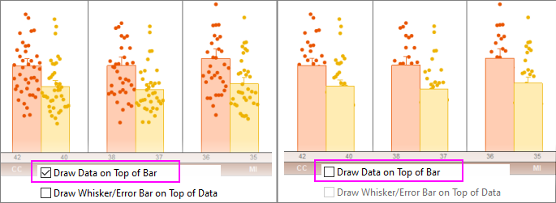

FAQ-317 Wie kann ich Daten oberhalb eines Box-/Balkendiagramms + Daten zeichnen?
Draw-Data-on-Top-of-Box
Letztes Update: 03.01.2020
Bei den Boxdiagrammvarianten Box + Datenüberschneidung und Balken + Datenüberschneidung können Sie die Daten oberhalb der Box bzw. des Balkens zeichnen:
- Klicken Sie zum Öffnen des Dialogs Details Zeichnung doppelt auf das Diagramm.
- Klicken Sie auf die Registerkarte Box und aktivieren Sie das Kontrollkästchen Daten oberhalb der Box/des Balkens zeichnen.
- 
Schlüsselwörter:Boxdiagramm, Balkendiagramm, Daten oberhalb, Box + Datenüberschneidung, Balken + Datenüberschneidung